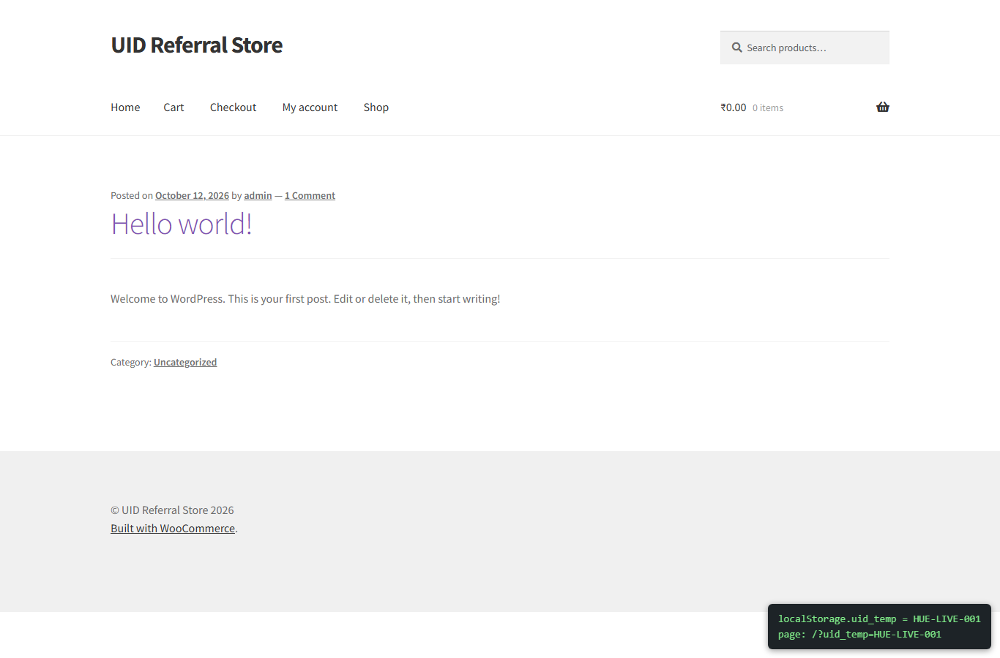
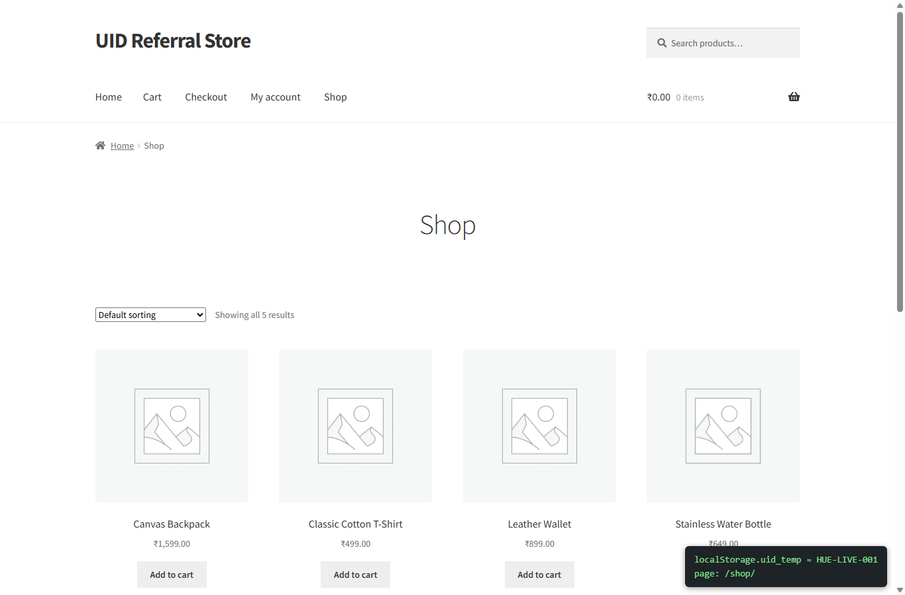
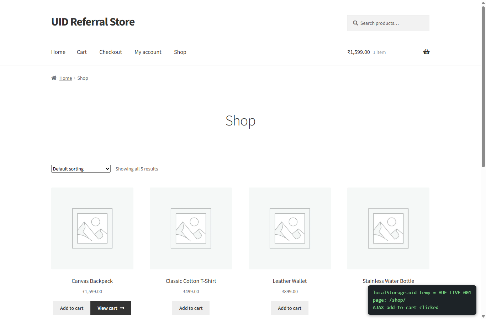
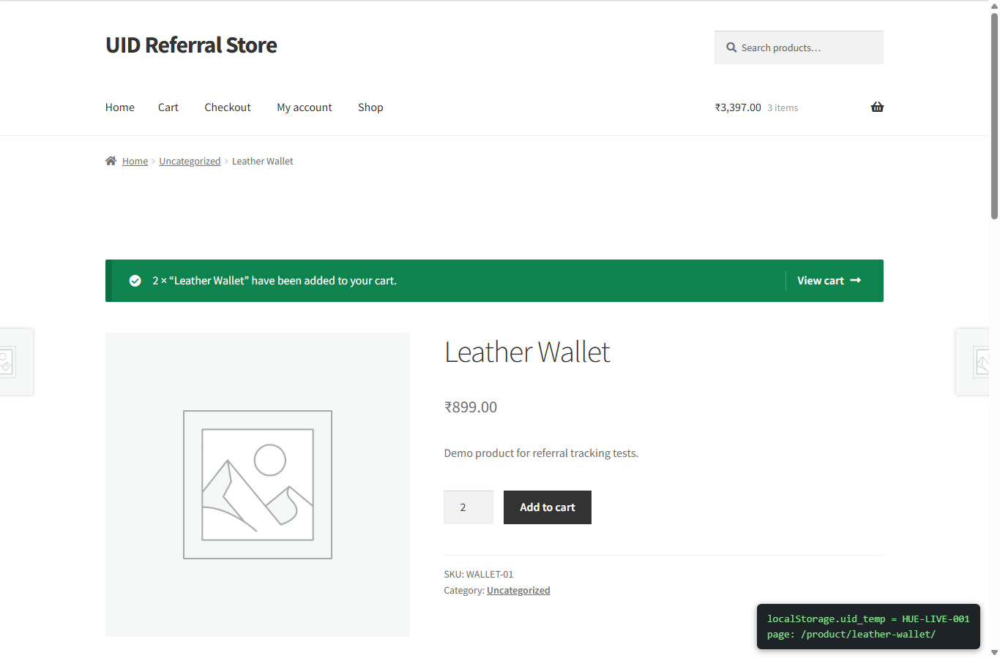
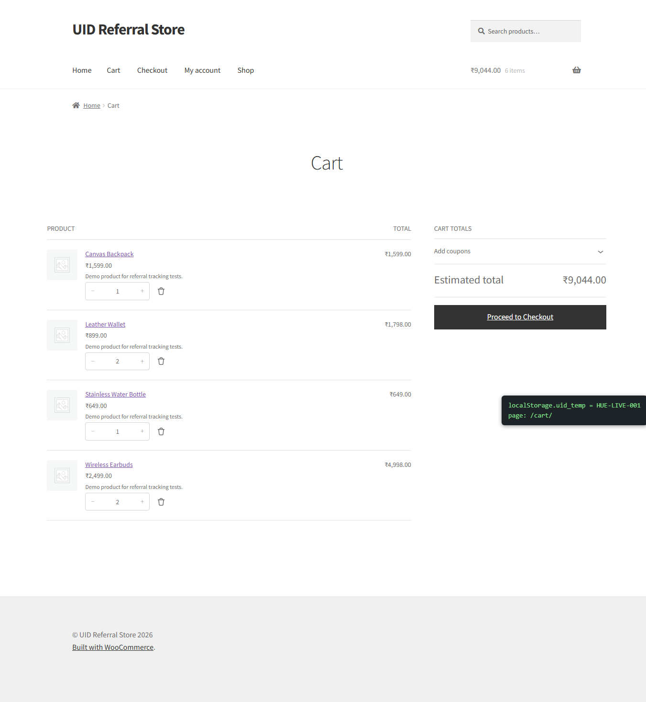
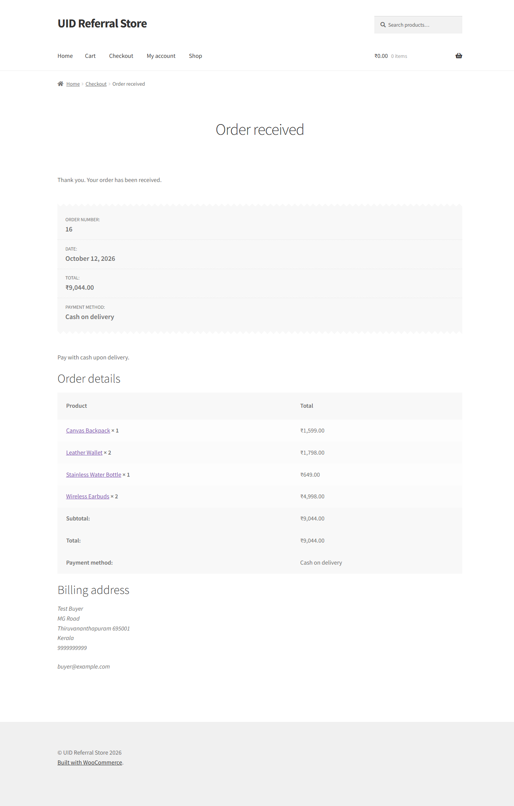
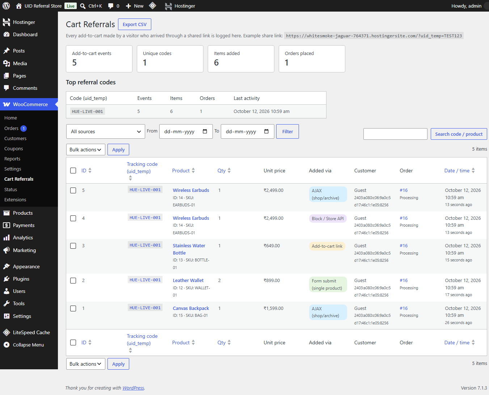
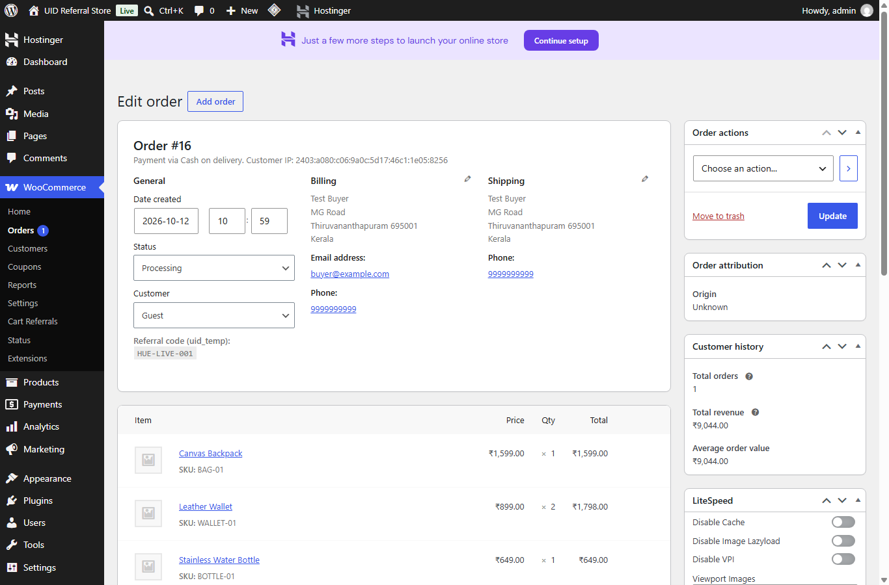
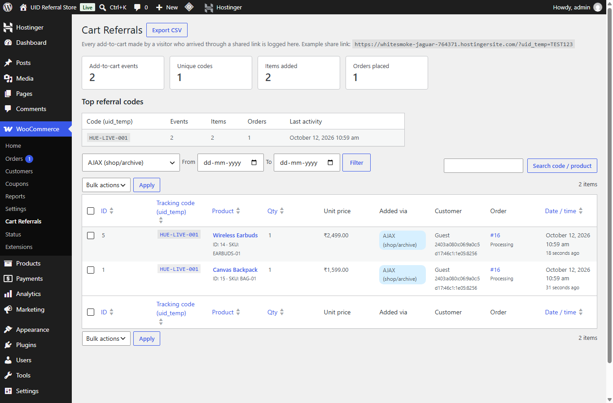

Technical Assessment submission · Custom plugin “UID Cart Referral Tracker” v1.0.0 · 12 October 2026
A custom WordPress plugin, written from scratch, that:
?uid_temp=STRING_ID on any page and stores it in the browser’s localStorage, where it stays available on every page the visitor opens afterwards;localStorage on every add-to-cart (single-product form submit, shop/archive AJAX buttons, plain add-to-cart links and block/Store API requests) and logs the event into a custom table;Plugins used: no referral or affiliate plugin was used. The only third-party components are WooCommerce 11.2.1 (the store itself, as required) and the free Storefront 4.6.2 theme. All tracking logic lives in the custom plugin documented below.
| Item | Value |
|---|---|
| Live site | https://whitesmoke-jaguar-764371.hostingersite.com/ (Hostinger, PHP 8.2, LiteSpeed). Built and first tested locally on XAMPP. |
| WordPress | 7.1.3 |
| WooCommerce | 11.2.1, currency INR, store address Kerala, India |
| Payment | Cash on Delivery enabled |
| Demo products | Classic Cotton T-Shirt (₹499), Leather Wallet (₹899), Stainless Water Bottle (₹649), Wireless Earbuds (₹2,499), Canvas Backpack (₹1,599) |
| Admin login | https://whitesmoke-jaguar-764371.hostingersite.com/wp-admin. Username admin, password Admin#456Pass |
| Test link format | https://whitesmoke-jaguar-764371.hostingersite.com/?uid_temp=YOUR_CODE (works on any page, e.g. /shop/?uid_temp=YOUR_CODE or a product URL) |
assets/js/uct-tracker.js on every frontend page, together with a nonce created by wp_create_nonce().uid_temp from the URL with URLSearchParams, strips control and markup characters, limits it to 100 characters and saves it with localStorage.setItem('uid_temp', value). A newer shared link replaces an older code (last click wins).localStorage is per-origin, the code stays available on every later page, tab and visit until the visitor clears site data.uct_uid_temp, SameSite=Lax, 30 days). The cookie is only a fallback for WooCommerce block/Store API requests, whose JSON body cannot be extended. localStorage stays the source of truth: the cookie is rewritten from it on each page view.| Add-to-cart path | How the code is sent from localStorage | Logged as |
|---|---|---|
| Single-product page form submit | Hidden inputs uid_temp and uct_nonce are injected into form.cart in a capture-phase submit listener. | form |
| Shop/archive AJAX buttons | The adding_to_cart jQuery event receives WooCommerce’s request data object by reference; the code and nonce are added to it. A $.ajaxPrefilter covers other jQuery add-to-cart calls from themes or quick-view plugins. | ajax |
Plain ?add-to-cart=ID links (AJAX disabled) | A click listener appends uid_temp and uct_nonce to the link before navigation. | link |
| Block themes / Store API | Server reads the cookie mirror. | store_api |
On the server, one hook handles all four paths: woocommerce_add_to_cart, which fires once for every successful add. The handler:
$_REQUEST['uid_temp'] and accepts it only when wp_verify_nonce() passes, otherwise falls back to the cookie mirror;wp_unslash() and sanitize_text_field(), and truncates to 100 characters;$wpdb->prepare().When the visitor checks out (classic or block checkout), the code is saved on the order as _uid_temp, shown on the order edit screen, and the matching log rows get their order_id filled in.
wp_uid_cart_referrals| Column | Type | Purpose |
|---|---|---|
| id | bigint unsigned, PK | Row ID |
| uid_temp | varchar(100), indexed | Tracking code read from localStorage |
| product_id / variation_id | bigint unsigned | Product added (variation 0 for simple products) |
| product_name / product_sku | varchar | Snapshot at the time of the event, kept even if the product changes later |
| quantity | int unsigned | Quantity added in this action |
| unit_price | decimal(19,4) | Price snapshot |
| cart_item_key | varchar(64) | WooCommerce cart line |
| source | varchar(20) | form, ajax, link or store_api |
| user_id / session_key | bigint / varchar | Logged-in user (0 = guest) and WooCommerce customer session |
| ip_address / user_agent / referer_url | varchar | Request context |
| order_id | bigint unsigned, nullable | Order placed by the same session for this product |
| created_at / created_at_gmt | datetime | Site-local and UTC timestamps |
WooCommerce → Cart Referrals requires the manage_woocommerce capability. It shows summary cards, the top five codes and a WP_List_Table. The table has search by code or product, filters by source and date range, sorting on whitelisted columns, pagination, a nonce-checked bulk delete and a nonce-checked CSV export.
| Requirement | Implementation |
|---|---|
| Input sanitization | sanitize_text_field( wp_unslash() ) for the code, user agent and filters; absint() for IDs and quantities; sanitize_key() for order and sort keys; dates validated against a regex; esc_url_raw() for the referrer. The client side also cleans the value before storing it. |
| Prepared queries | Every INSERT, UPDATE, DELETE and filtered SELECT uses $wpdb->prepare(). LIKE searches use $wpdb->esc_like(). Sort columns and directions are whitelisted. |
| Nonces | The frontend sends uct_nonce with every add-to-cart and the server checks it with wp_verify_nonce(), which blocks cross-site forged attribution. The nonce action does not start with “woocommerce”, so guest nonces stay stable before and after the WooCommerce session starts. Bulk delete uses check_admin_referer('bulk-referrals') and CSV export uses check_admin_referer('uct_export'). |
| Output escaping | All admin output goes through esc_html, esc_attr or esc_url. The CSV export neutralises cells starting with = + - @ to prevent formula injection. |
| Access control | The admin page, bulk delete and export all check current_user_can('manage_woocommerce'). |
The full flow was run on the live Hostinger site in headless Chrome with the code HUE-LIVE-001, then checked directly in the database.
| # | Test | Result |
|---|---|---|
| 1 | Open /?uid_temp=HUE-LIVE-001 | localStorage.uid_temp = HUE-LIVE-001 |
| 2 | Navigate to /shop/ without the parameter | Value still present |
| 3 | AJAX “Add to cart” on the shop page | Logged, source ajax |
| 4 | Single product form, quantity 2 | Logged, quantity 2, source form |
| 5 | Plain ?add-to-cart=ID link | Link rewritten with code and nonce, logged as link |
| 6 | Store API cart/add-item | Logged through cookie fallback, source store_api |
| 7 | Forged AJAX request with uid_temp=FORGED and an invalid nonce | FORGED rejected. The row was attributed to the visitor’s real code |
| 8 | Checkout with Cash on Delivery | Order created as Processing. All five rows linked to the order. Code shown on the order screen |
+----+--------------+------------------------+-----+-----------+----------+---------------------+
| id | uid_temp | product_name | qty | source | order_id | created_at |
+----+--------------+------------------------+-----+-----------+----------+---------------------+
| 1 | HUE-LIVE-001 | Canvas Backpack | 1 | ajax | 16 | 2026-10-12 10:59:14 |
| 2 | HUE-LIVE-001 | Leather Wallet | 2 | form | 16 | 2026-10-12 10:59:23 |
| 3 | HUE-LIVE-001 | Stainless Water Bottle | 1 | link | 16 | 2026-10-12 10:59:25 |
| 4 | HUE-LIVE-001 | Wireless Earbuds | 1 | store_api | 16 | 2026-10-12 10:59:27 |
| 5 | HUE-LIVE-001 | Wireless Earbuds | 1 | ajax | 16 | 2026-10-12 10:59:27 |
+----+--------------+------------------------+-----+-----------+----------+---------------------+









uid-cart-tracker folder into wp-content/plugins/, or upload uid-cart-tracker.zip under Plugins → Add New → Upload.{prefix}uid_cart_referrals.?uid_temp=CODE appended, add products to the cart, then open WooCommerce → Cart Referrals.uninstall.php).By default only add-to-carts that carry a code are logged, since the page is a referral log. Developers can log every add-to-cart with add_filter( 'uct_log_without_uid', '__return_true' );. On sites with full-page caching, cached pages can serve an expired nonce after 24 hours. In that case the cookie fallback still attributes the event.
File structure:
uid-cart-tracker/
├── uid-cart-tracker.php Bootstrap, constants, hooks, HPOS compatibility
├── uninstall.php Drops the table on delete
├── assets/js/uct-tracker.js Capture, persist and inject (frontend)
└── includes/
├── functions.php Table name and sanitizer helpers
├── class-uct-install.php dbDelta schema
├── class-uct-tracker.php Add-to-cart logging, order linking
├── class-uct-admin.php WooCommerce → Cart Referrals page, CSV export
└── class-uct-list-table.php WP_List_Table for the loguid-cart-tracker/uid-cart-tracker.php
<?php
/**
* Plugin Name: UID Cart Referral Tracker
* Description: Captures share codes from the URL (?uid_temp=STRING_ID), persists them in the visitor's localStorage and logs every add-to-cart made with a code into a custom table, viewable under WooCommerce > Cart Referrals. Built from scratch – no third-party referral/affiliate plugins.
* Version: 1.0.0
* Requires at least: 6.0
* Requires PHP: 7.4
* Requires Plugins: woocommerce
* WC requires at least: 7.0
* Author: Assessment Submission
* License: GPL-2.0-or-later
* Text Domain: uid-cart-tracker
*/
defined( 'ABSPATH' ) || exit;
define( 'UCT_VERSION', '1.0.0' );
define( 'UCT_DB_VERSION', '1.0.0' );
define( 'UCT_FILE', __FILE__ );
define( 'UCT_PATH', plugin_dir_path( __FILE__ ) );
define( 'UCT_URL', plugin_dir_url( __FILE__ ) );
define( 'UCT_PARAM', 'uid_temp' ); // URL / request parameter + localStorage key.
define( 'UCT_NONCE_ACTION', 'uct_track_add_to_cart' ); // Must NOT start with "woocommerce" (WC rewrites guest nonce UIDs for those).
define( 'UCT_NONCE_FIELD', 'uct_nonce' );
define( 'UCT_COOKIE', 'uct_uid_temp' ); // Mirror of localStorage, used only for Store API / block add-to-cart.
define( 'UCT_MAX_LEN', 100 );
require_once UCT_PATH . 'includes/functions.php';
require_once UCT_PATH . 'includes/class-uct-install.php';
require_once UCT_PATH . 'includes/class-uct-tracker.php';
register_activation_hook( __FILE__, array( 'UCT_Install', 'activate' ) );
/**
* Declare compatibility with WooCommerce HPOS and Cart/Checkout blocks.
*/
add_action(
'before_woocommerce_init',
static function () {
if ( class_exists( \Automattic\WooCommerce\Utilities\FeaturesUtil::class ) ) {
\Automattic\WooCommerce\Utilities\FeaturesUtil::declare_compatibility( 'custom_order_tables', __FILE__, true );
\Automattic\WooCommerce\Utilities\FeaturesUtil::declare_compatibility( 'cart_checkout_blocks', __FILE__, true );
}
}
);
add_action(
'plugins_loaded',
static function () {
UCT_Install::maybe_upgrade();
if ( ! class_exists( 'WooCommerce' ) ) {
add_action(
'admin_notices',
static function () {
echo '<div class="notice notice-error"><p>' . esc_html__( 'UID Cart Referral Tracker requires WooCommerce to be installed and active.', 'uid-cart-tracker' ) . '</p></div>';
}
);
return;
}
UCT_Tracker::init();
if ( is_admin() ) {
require_once UCT_PATH . 'includes/class-uct-admin.php';
UCT_Admin::init();
}
}
);
uid-cart-tracker/assets/js/uct-tracker.js
/**
* UID Cart Referral Tracker – frontend.
*
* A. Capture & persist: reads ?uid_temp=STRING_ID and stores it in localStorage,
* so it survives navigation across every page of the site.
* B. On add-to-cart, reads uid_temp from localStorage and sends it (with a nonce) to WooCommerce:
* - single product form submit -> hidden inputs injected into the form
* - shop/archive AJAX buttons -> added to the request via the 'adding_to_cart' event
* - any other jQuery add-to-cart AJAX -> $.ajaxPrefilter safety net
* - non-AJAX "?add-to-cart=ID" links -> query args appended to the link
* - block / Store API add-to-cart -> first-party cookie mirrored from localStorage
*/
(function (window, document) {
'use strict';
var cfg = window.uctConfig || {};
var PARAM = cfg.param || 'uid_temp';
var KEY = cfg.storageKey || 'uid_temp';
var NONCE_FIELD = cfg.nonceField || 'uct_nonce';
var NONCE = cfg.nonce || '';
var COOKIE = cfg.cookieName || 'uct_uid_temp';
var COOKIE_DAYS = parseInt(cfg.cookieDays, 10) || 30;
var MAX_LEN = parseInt(cfg.maxLength, 10) || 100;
/* ---------------------------------------------------------------- helpers */
function storageAvailable() {
try {
var t = '__uct_test__';
window.localStorage.setItem(t, t);
window.localStorage.removeItem(t);
return true;
} catch (e) {
return false;
}
}
var HAS_STORAGE = storageAvailable();
// Client-side clean-up; the server sanitizes again with sanitize_text_field().
function clean(value) {
if (typeof value !== 'string') {
return '';
}
value = value.replace(/[\u0000-\u001F\u007F<>"'`\\]/g, '').trim();
return value.substring(0, MAX_LEN);
}
function writeCookie(value) {
var secure = window.location.protocol === 'https:' ? '; Secure' : '';
document.cookie = COOKIE + '=' + encodeURIComponent(value) +
'; path=/; max-age=' + (COOKIE_DAYS * 86400) + '; SameSite=Lax' + secure;
}
function readCookie() {
var match = document.cookie.match(new RegExp('(?:^|; )' + COOKIE + '=([^;]*)'));
try {
return match ? clean(decodeURIComponent(match[1])) : '';
} catch (e) {
return '';
}
}
function getUid() {
if (HAS_STORAGE) {
try {
return clean(window.localStorage.getItem(KEY) || '');
} catch (e) { /* fall through */ }
}
return readCookie(); // Private mode / storage blocked.
}
function setUid(value) {
if (HAS_STORAGE) {
try {
window.localStorage.setItem(KEY, value);
window.localStorage.setItem(KEY + '_captured_at', new Date().toISOString());
} catch (e) { /* ignore quota errors */ }
}
writeCookie(value);
}
/* ------------------------------------------------ A. capture & persist */
function captureFromUrl() {
var value = '';
try {
value = new URLSearchParams(window.location.search).get(PARAM) || '';
} catch (e) {
var m = window.location.search.match(new RegExp('[?&]' + PARAM + '=([^&#]*)'));
value = m ? decodeURIComponent(m[1].replace(/\+/g, ' ')) : '';
}
value = clean(value);
if (value) {
setUid(value); // Latest shared link wins.
}
}
captureFromUrl();
// Keep the cookie mirror in sync with localStorage on every page view.
(function syncCookie() {
var uid = getUid();
if (uid) {
writeCookie(uid);
}
}());
/* ------------------------------- B1. single-product (normal) form submit */
function setHiddenField(form, name, value) {
var input = form.querySelector('input[type="hidden"][name="' + name + '"]');
if (!input) {
input = document.createElement('input');
input.type = 'hidden';
input.name = name;
form.appendChild(input);
}
input.value = value;
}
function isAddToCartForm(form) {
return form.classList.contains('cart') ||
!!form.querySelector('[name="add-to-cart"]');
}
function injectIntoForm(form) {
var uid = getUid();
if (!uid || !isAddToCartForm(form)) {
return;
}
setHiddenField(form, PARAM, uid);
setHiddenField(form, NONCE_FIELD, NONCE);
}
// Capture phase: runs before themes that serialize the form for their own AJAX submit.
document.addEventListener('submit', function (e) {
if (e.target && e.target.tagName === 'FORM') {
injectIntoForm(e.target);
}
}, true);
// Also prepare forms up front (covers scripts that submit forms programmatically).
document.addEventListener('DOMContentLoaded', function () {
var forms = document.querySelectorAll('form.cart');
for (var i = 0; i < forms.length; i++) {
injectIntoForm(forms[i]);
}
});
/* --------------------------------- B2. non-AJAX "?add-to-cart=ID" links */
document.addEventListener('click', function (e) {
var link = e.target && e.target.closest ? e.target.closest('a[href]') : null;
var uid = getUid();
if (!link || !uid) {
return;
}
var url;
try {
url = new URL(link.href, window.location.href);
} catch (err) {
return;
}
if (url.origin !== window.location.origin || !url.searchParams.has('add-to-cart')) {
return;
}
url.searchParams.set(PARAM, uid);
url.searchParams.set(NONCE_FIELD, NONCE);
link.href = url.toString();
}, true);
/* ------------------------------------------ B3. WooCommerce AJAX add-to-cart */
var $ = window.jQuery;
if ($) {
// Shop/archive buttons: WooCommerce passes the request data object by reference.
$(document.body).on('adding_to_cart', function (event, $button, data) {
var uid = getUid();
if (uid && data && typeof data === 'object') {
data[PARAM] = uid;
data[NONCE_FIELD] = NONCE;
}
});
// Safety net for any other jQuery-based add-to-cart request (themes, quick-view, etc.).
$.ajaxPrefilter(function (options) {
var uid = getUid();
var url = String(options.url || '');
var data = options.data;
if (!uid) {
return;
}
var isAddToCart = url.indexOf('add_to_cart') !== -1 ||
(typeof data === 'string' && (data.indexOf('add-to-cart=') !== -1 || data.indexOf('action=woocommerce_add_to_cart') !== -1)) ||
(window.FormData && data instanceof window.FormData && data.has('add-to-cart'));
if (!isAddToCart) {
return;
}
if (typeof data === 'string') {
if (data.indexOf(PARAM + '=') === -1) {
options.data = data + (data ? '&' : '') +
encodeURIComponent(PARAM) + '=' + encodeURIComponent(uid) + '&' +
encodeURIComponent(NONCE_FIELD) + '=' + encodeURIComponent(NONCE);
}
} else if (window.FormData && data instanceof window.FormData) {
if (!data.has(PARAM)) {
data.append(PARAM, uid);
data.append(NONCE_FIELD, NONCE);
}
} else if (!data) {
options.data = encodeURIComponent(PARAM) + '=' + encodeURIComponent(uid) + '&' +
encodeURIComponent(NONCE_FIELD) + '=' + encodeURIComponent(NONCE);
}
});
}
// Small public API, handy for debugging in the browser console.
window.uctTracker = { get: getUid, set: function (v) { v = clean(String(v || '')); if (v) { setUid(v); } } };
}(window, document));
uid-cart-tracker/includes/functions.php
<?php
/**
* Shared helpers.
*
* @package UID_Cart_Tracker
*/
defined( 'ABSPATH' ) || exit;
/**
* Full name of the custom log table.
*
* @return string
*/
function uct_table_name() {
global $wpdb;
return $wpdb->prefix . 'uid_cart_referrals';
}
/**
* Sanitize a raw (slashed) uid_temp value coming from a superglobal.
*
* @param mixed $raw Raw value from $_REQUEST / $_COOKIE.
* @return string Clean code, or '' when invalid.
*/
function uct_sanitize_uid( $raw ) {
if ( ! is_scalar( $raw ) ) {
return '';
}
$uid = trim( sanitize_text_field( wp_unslash( (string) $raw ) ) );
return function_exists( 'mb_substr' ) ? mb_substr( $uid, 0, UCT_MAX_LEN ) : substr( $uid, 0, UCT_MAX_LEN );
}
uid-cart-tracker/includes/class-uct-install.php
<?php
/**
* Database table creation / upgrades.
*
* @package UID_Cart_Tracker
*/
defined( 'ABSPATH' ) || exit;
class UCT_Install {
/**
* Activation callback.
*/
public static function activate() {
self::create_table();
update_option( 'uct_db_version', UCT_DB_VERSION, false );
}
/**
* Re-run dbDelta when the schema version changes (e.g. plugin updated without re-activation).
*/
public static function maybe_upgrade() {
if ( get_option( 'uct_db_version' ) !== UCT_DB_VERSION ) {
self::activate();
}
}
/**
* Create / update the log table.
*
* Columns:
* - uid_temp Share code captured from ?uid_temp= (via localStorage).
* - product_id Parent product ID.
* - variation_id Variation ID (0 for simple products).
* - product_name Product name snapshot at the time of the event.
* - product_sku SKU snapshot.
* - quantity Quantity added in this action.
* - unit_price Price snapshot (store currency).
* - cart_item_key WooCommerce cart item key.
* - source How the item was added: form | ajax | link | store_api.
* - user_id Logged-in user (0 = guest).
* - session_key WooCommerce customer/session ID (used to link orders).
* - ip_address / user_agent / referer_url Request context.
* - order_id Filled in when the session checks out with this product.
* - created_at Site-local timestamp; created_at_gmt = UTC timestamp.
*/
public static function create_table() {
global $wpdb;
require_once ABSPATH . 'wp-admin/includes/upgrade.php';
$table = uct_table_name();
$charset_collate = $wpdb->get_charset_collate();
$sql = "CREATE TABLE {$table} (
id bigint(20) unsigned NOT NULL AUTO_INCREMENT,
uid_temp varchar(100) NOT NULL DEFAULT '',
product_id bigint(20) unsigned NOT NULL DEFAULT 0,
variation_id bigint(20) unsigned NOT NULL DEFAULT 0,
product_name varchar(255) NOT NULL DEFAULT '',
product_sku varchar(100) NOT NULL DEFAULT '',
quantity int(11) unsigned NOT NULL DEFAULT 1,
unit_price decimal(19,4) NOT NULL DEFAULT 0,
cart_item_key varchar(64) NOT NULL DEFAULT '',
source varchar(20) NOT NULL DEFAULT 'form',
user_id bigint(20) unsigned NOT NULL DEFAULT 0,
session_key varchar(100) NOT NULL DEFAULT '',
ip_address varchar(45) NOT NULL DEFAULT '',
user_agent varchar(255) NOT NULL DEFAULT '',
referer_url varchar(255) NOT NULL DEFAULT '',
order_id bigint(20) unsigned DEFAULT NULL,
created_at datetime NOT NULL,
created_at_gmt datetime NOT NULL,
PRIMARY KEY (id),
KEY uid_temp (uid_temp),
KEY product_id (product_id),
KEY session_key (session_key),
KEY order_id (order_id),
KEY created_at (created_at)
) {$charset_collate};";
dbDelta( $sql );
}
}
uid-cart-tracker/includes/class-uct-tracker.php
<?php
/**
* Frontend script loading + add-to-cart logging.
*
* @package UID_Cart_Tracker
*/
defined( 'ABSPATH' ) || exit;
class UCT_Tracker {
const SESSION_KEY = 'uct_uid_temp';
/**
* Register hooks.
*/
public static function init() {
add_action( 'wp_enqueue_scripts', array( __CLASS__, 'enqueue_scripts' ) );
// Fires for EVERY successful add-to-cart: single product form POST, archive AJAX
// (wc-ajax=add_to_cart), ?add-to-cart= links and Store API (block) requests.
add_action( 'woocommerce_add_to_cart', array( __CLASS__, 'log_add_to_cart' ), 10, 6 );
// Link logged rows to the order when the visitor checks out (classic + block checkout).
add_action( 'woocommerce_checkout_order_processed', array( __CLASS__, 'link_order' ), 10, 1 );
add_action( 'woocommerce_store_api_checkout_order_processed', array( __CLASS__, 'link_order' ), 10, 1 );
// Show the referral code on the admin order screen.
add_action( 'woocommerce_admin_order_data_after_order_details', array( __CLASS__, 'render_order_meta' ) );
}
/**
* Enqueue the capture/persist script on every frontend page.
*/
public static function enqueue_scripts() {
wp_enqueue_script(
'uct-tracker',
UCT_URL . 'assets/js/uct-tracker.js',
array( 'jquery' ),
UCT_VERSION,
true
);
$config = array(
'param' => UCT_PARAM,
'storageKey' => UCT_PARAM,
'nonceField' => UCT_NONCE_FIELD,
'nonce' => wp_create_nonce( UCT_NONCE_ACTION ),
'cookieName' => UCT_COOKIE,
'cookieDays' => 30,
'maxLength' => UCT_MAX_LEN,
);
wp_add_inline_script( 'uct-tracker', 'window.uctConfig = ' . wp_json_encode( $config ) . ';', 'before' );
}
/**
* Read the uid_temp sent by the browser for the current add-to-cart request.
*
* 1. Request parameter (form POST, AJAX POST, ?add-to-cart link) – injected by the JS
* from localStorage and accepted only with a valid nonce (blocks CSRF-forged attribution).
* 2. Fallback: first-party cookie mirrored from localStorage by the same JS. Used for
* Store API/block requests whose JSON body we cannot extend.
*
* @return string
*/
public static function get_request_uid() {
// phpcs:disable WordPress.Security.NonceVerification.Recommended -- nonce is verified right here.
if ( isset( $_REQUEST[ UCT_PARAM ] ) ) {
$nonce = isset( $_REQUEST[ UCT_NONCE_FIELD ] ) ? sanitize_text_field( wp_unslash( $_REQUEST[ UCT_NONCE_FIELD ] ) ) : '';
if ( wp_verify_nonce( $nonce, UCT_NONCE_ACTION ) ) {
$uid = uct_sanitize_uid( $_REQUEST[ UCT_PARAM ] ); // phpcs:ignore WordPress.Security.ValidatedSanitizedInput.InputNotSanitized -- sanitized in uct_sanitize_uid().
if ( '' !== $uid ) {
return $uid;
}
} elseif ( defined( 'WP_DEBUG' ) && WP_DEBUG ) {
error_log( '[UID Cart Tracker] uid_temp ignored: nonce verification failed.' ); // phpcs:ignore WordPress.PHP.DevelopmentFunctions.error_log_error_log
}
}
// phpcs:enable
if ( isset( $_COOKIE[ UCT_COOKIE ] ) ) {
return uct_sanitize_uid( $_COOKIE[ UCT_COOKIE ] ); // phpcs:ignore WordPress.Security.ValidatedSanitizedInput.InputNotSanitized -- sanitized in uct_sanitize_uid().
}
return '';
}
/**
* Work out how the product was added.
*
* @return string form|ajax|link|store_api
*/
private static function detect_source() {
if ( defined( 'REST_REQUEST' ) && REST_REQUEST ) {
return 'store_api';
}
if ( wp_doing_ajax() ) { // WC defines DOING_AJAX for wc-ajax endpoints.
return 'ajax';
}
$method = isset( $_SERVER['REQUEST_METHOD'] ) ? strtoupper( sanitize_text_field( wp_unslash( $_SERVER['REQUEST_METHOD'] ) ) ) : 'GET';
return 'POST' === $method ? 'form' : 'link';
}
/**
* Log an add-to-cart event.
*
* @param string $cart_item_key Cart item key.
* @param int $product_id Product ID.
* @param int $quantity Quantity added.
* @param int $variation_id Variation ID.
* @param array $variation Variation attributes.
* @param array $cart_item_data Extra cart item data.
*/
public static function log_add_to_cart( $cart_item_key, $product_id, $quantity, $variation_id = 0, $variation = array(), $cart_item_data = array() ) {
global $wpdb;
$uid = self::get_request_uid();
/**
* Only add-to-carts that carry a share code are logged by default.
* Return true from this filter to log every add-to-cart (uid_temp stored as '').
*/
if ( '' === $uid && ! apply_filters( 'uct_log_without_uid', false ) ) {
return;
}
$product_id = absint( $product_id );
$variation_id = absint( $variation_id );
$quantity = max( 1, absint( $quantity ) );
$product = wc_get_product( $variation_id ? $variation_id : $product_id );
$product_name = $product ? wp_strip_all_tags( $product->get_name() ) : '';
$product_sku = $product ? (string) $product->get_sku() : '';
$unit_price = $product ? (float) $product->get_price() : 0.0;
$session_key = '';
if ( WC()->session ) {
$session_key = (string) WC()->session->get_customer_id();
WC()->session->set( self::SESSION_KEY, $uid ); // Remember the code for order meta.
}
$ip = class_exists( 'WC_Geolocation' ) ? WC_Geolocation::get_ip_address() : '';
$user_agent = isset( $_SERVER['HTTP_USER_AGENT'] ) ? sanitize_text_field( wp_unslash( $_SERVER['HTTP_USER_AGENT'] ) ) : '';
$referer = wp_get_raw_referer();
$referer = $referer ? esc_url_raw( $referer ) : '';
$table = uct_table_name();
// phpcs:ignore WordPress.DB.DirectDatabaseQuery.DirectQuery, WordPress.DB.PreparedSQL.InterpolatedNotPrepared -- custom table, values prepared.
$wpdb->query(
$wpdb->prepare(
"INSERT INTO {$table}
(uid_temp, product_id, variation_id, product_name, product_sku, quantity, unit_price, cart_item_key, source, user_id, session_key, ip_address, user_agent, referer_url, created_at, created_at_gmt)
VALUES (%s, %d, %d, %s, %s, %d, %f, %s, %s, %d, %s, %s, %s, %s, %s, %s)",
$uid,
$product_id,
$variation_id,
mb_substr( $product_name, 0, 255 ),
mb_substr( $product_sku, 0, 100 ),
$quantity,
$unit_price,
substr( sanitize_key( $cart_item_key ), 0, 64 ),
self::detect_source(),
get_current_user_id(),
substr( $session_key, 0, 100 ),
substr( sanitize_text_field( $ip ), 0, 45 ),
mb_substr( $user_agent, 0, 255 ),
substr( $referer, 0, 255 ),
current_time( 'mysql' ),
current_time( 'mysql', true )
)
);
}
/**
* When an order is placed, store the code on the order and link the matching log rows.
*
* @param int|WC_Order $order Order ID (classic checkout) or order object (Store API).
*/
public static function link_order( $order ) {
global $wpdb;
$order = $order instanceof WC_Order ? $order : wc_get_order( $order );
if ( ! $order || ! WC()->session ) {
return;
}
$uid = uct_sanitize_uid( WC()->session->get( self::SESSION_KEY, '' ) );
if ( '' === $uid ) {
return;
}
$order->update_meta_data( '_uid_temp', $uid );
$order->save();
$product_ids = array();
foreach ( $order->get_items() as $item ) {
$product_ids[] = absint( $item->get_product_id() );
}
$product_ids = array_values( array_filter( array_unique( $product_ids ) ) );
if ( empty( $product_ids ) ) {
return;
}
$table = uct_table_name();
$placeholders = implode( ',', array_fill( 0, count( $product_ids ), '%d' ) );
$params = array_merge( array( $order->get_id(), (string) WC()->session->get_customer_id() ), $product_ids );
// phpcs:ignore WordPress.DB.DirectDatabaseQuery.DirectQuery, WordPress.DB.DirectDatabaseQuery.NoCaching, WordPress.DB.PreparedSQL.InterpolatedNotPrepared, WordPress.DB.PreparedSQLPlaceholders.UnfinishedPrepare
$wpdb->query(
$wpdb->prepare(
"UPDATE {$table} SET order_id = %d WHERE session_key = %s AND order_id IS NULL AND product_id IN ({$placeholders})",
$params
)
);
WC()->session->set( self::SESSION_KEY, null );
}
/**
* Display the referral code in the order edit screen.
*
* @param WC_Order $order Order.
*/
public static function render_order_meta( $order ) {
$uid = $order->get_meta( '_uid_temp' );
if ( $uid ) {
echo '<p class="form-field form-field-wide"><strong>' . esc_html__( 'Referral code (uid_temp):', 'uid-cart-tracker' ) . '</strong><br><code style="white-space:nowrap">' . esc_html( $uid ) . '</code></p>';
}
}
}
uid-cart-tracker/includes/class-uct-admin.php
<?php
/**
* WooCommerce > Cart Referrals admin page.
*
* @package UID_Cart_Tracker
*/
defined( 'ABSPATH' ) || exit;
class UCT_Admin {
const PAGE_SLUG = 'uct-cart-referrals';
const CAP = 'manage_woocommerce';
/**
* Register hooks.
*/
public static function init() {
add_action( 'admin_menu', array( __CLASS__, 'register_menu' ), 60 );
add_action( 'admin_init', array( __CLASS__, 'maybe_export_csv' ) );
}
/**
* Add the submenu under WooCommerce.
*/
public static function register_menu() {
add_submenu_page(
'woocommerce',
__( 'Cart Referrals', 'uid-cart-tracker' ),
__( 'Cart Referrals', 'uid-cart-tracker' ),
self::CAP,
self::PAGE_SLUG,
array( __CLASS__, 'render_page' )
);
}
/**
* Read and sanitize the current filters from the query string.
*
* @return array
*/
public static function get_filters() {
// phpcs:disable WordPress.Security.NonceVerification.Recommended -- read-only GET filters, capability checked.
$search = isset( $_GET['s'] ) ? uct_sanitize_uid( $_GET['s'] ) : ''; // phpcs:ignore WordPress.Security.ValidatedSanitizedInput.InputNotSanitized
$source = isset( $_GET['source'] ) ? sanitize_key( wp_unslash( $_GET['source'] ) ) : '';
$date_from = isset( $_GET['date_from'] ) ? sanitize_text_field( wp_unslash( $_GET['date_from'] ) ) : '';
$date_to = isset( $_GET['date_to'] ) ? sanitize_text_field( wp_unslash( $_GET['date_to'] ) ) : '';
// phpcs:enable
$valid_date = '/^\d{4}-\d{2}-\d{2}$/';
return array(
's' => $search,
'source' => in_array( $source, array( 'form', 'ajax', 'link', 'store_api' ), true ) ? $source : '',
'date_from' => preg_match( $valid_date, $date_from ) ? $date_from : '',
'date_to' => preg_match( $valid_date, $date_to ) ? $date_to : '',
);
}
/**
* Build a prepared WHERE clause for the given filters.
*
* @param array $filters From get_filters().
* @return string SQL starting with "WHERE".
*/
public static function build_where( array $filters ) {
global $wpdb;
$clauses = array( '1=1' );
$params = array();
if ( '' !== $filters['s'] ) {
$clauses[] = '(uid_temp LIKE %s OR product_name LIKE %s)';
$like = '%' . $wpdb->esc_like( $filters['s'] ) . '%';
$params[] = $like;
$params[] = $like;
}
if ( '' !== $filters['source'] ) {
$clauses[] = 'source = %s';
$params[] = $filters['source'];
}
if ( '' !== $filters['date_from'] ) {
$clauses[] = 'created_at >= %s';
$params[] = $filters['date_from'] . ' 00:00:00';
}
if ( '' !== $filters['date_to'] ) {
$clauses[] = 'created_at <= %s';
$params[] = $filters['date_to'] . ' 23:59:59';
}
$where = 'WHERE ' . implode( ' AND ', $clauses );
// phpcs:ignore WordPress.DB.PreparedSQL.NotPrepared -- placeholders only.
return $params ? $wpdb->prepare( $where, $params ) : $where;
}
/**
* Summary numbers + top codes for the current filters.
*
* @param string $where Prepared WHERE clause.
* @return array
*/
private static function get_summary( $where ) {
global $wpdb;
$table = uct_table_name();
// phpcs:disable WordPress.DB.DirectDatabaseQuery, WordPress.DB.PreparedSQL.InterpolatedNotPrepared -- $where is already prepared.
$totals = $wpdb->get_row(
"SELECT COUNT(*) AS events, COUNT(DISTINCT uid_temp) AS codes, COALESCE(SUM(quantity),0) AS qty, COUNT(DISTINCT order_id) AS orders FROM {$table} {$where}",
ARRAY_A
);
$top = $wpdb->get_results(
"SELECT uid_temp, COUNT(*) AS events, SUM(quantity) AS qty, COUNT(DISTINCT order_id) AS orders, MAX(created_at) AS last_seen
FROM {$table} {$where} GROUP BY uid_temp ORDER BY events DESC LIMIT 5",
ARRAY_A
);
// phpcs:enable
return array(
'totals' => $totals ? $totals : array( 'events' => 0, 'codes' => 0, 'qty' => 0, 'orders' => 0 ),
'top' => $top ? $top : array(),
);
}
/**
* Render the admin page.
*/
public static function render_page() {
if ( ! current_user_can( self::CAP ) ) {
wp_die( esc_html__( 'You do not have permission to view this page.', 'uid-cart-tracker' ) );
}
require_once UCT_PATH . 'includes/class-uct-list-table.php';
$filters = self::get_filters();
$table = new UCT_List_Table( $filters );
$table->process_bulk_action();
$table->prepare_items();
$summary = self::get_summary( self::build_where( $filters ) );
$export_url = wp_nonce_url(
add_query_arg( array_merge( array( 'page' => self::PAGE_SLUG, 'uct_action' => 'export' ), array_filter( $filters ) ), admin_url( 'admin.php' ) ),
'uct_export'
);
$share_url = add_query_arg( UCT_PARAM, 'TEST123', home_url( '/' ) );
?>
<div class="wrap uct-wrap">
<h1 class="wp-heading-inline"><?php esc_html_e( 'Cart Referrals', 'uid-cart-tracker' ); ?></h1>
<a href="<?php echo esc_url( $export_url ); ?>" class="page-title-action"><?php esc_html_e( 'Export CSV', 'uid-cart-tracker' ); ?></a>
<hr class="wp-header-end">
<p class="description">
<?php esc_html_e( 'Every add-to-cart made by a visitor who arrived through a shared link is logged here. Example share link:', 'uid-cart-tracker' ); ?>
<code><?php echo esc_html( $share_url ); ?></code>
</p>
<style>
.uct-cards{display:flex;gap:12px;flex-wrap:wrap;margin:16px 0}
.uct-card{background:#fff;border:1px solid #c3c4c7;border-radius:4px;padding:12px 16px;min-width:150px}
.uct-card strong{display:block;font-size:24px;line-height:1.3}
.uct-top{max-width:720px;margin-bottom:16px}
.uct-source{display:inline-block;padding:2px 8px;border-radius:10px;background:#f0f0f1;font-size:12px}
.uct-source-ajax{background:#d7f0ff}.uct-source-form{background:#e5f5e0}.uct-source-link{background:#fcf0d0}.uct-source-store_api{background:#ede4fa}
.uct-filters input[type=date]{vertical-align:middle}
.column-uid_temp code{font-size:13px}
</style>
<div class="uct-cards">
<div class="uct-card"><span><?php esc_html_e( 'Add-to-cart events', 'uid-cart-tracker' ); ?></span><strong><?php echo esc_html( number_format_i18n( (int) $summary['totals']['events'] ) ); ?></strong></div>
<div class="uct-card"><span><?php esc_html_e( 'Unique codes', 'uid-cart-tracker' ); ?></span><strong><?php echo esc_html( number_format_i18n( (int) $summary['totals']['codes'] ) ); ?></strong></div>
<div class="uct-card"><span><?php esc_html_e( 'Items added', 'uid-cart-tracker' ); ?></span><strong><?php echo esc_html( number_format_i18n( (int) $summary['totals']['qty'] ) ); ?></strong></div>
<div class="uct-card"><span><?php esc_html_e( 'Orders placed', 'uid-cart-tracker' ); ?></span><strong><?php echo esc_html( number_format_i18n( (int) $summary['totals']['orders'] ) ); ?></strong></div>
</div>
<?php if ( ! empty( $summary['top'] ) ) : ?>
<h2><?php esc_html_e( 'Top referral codes', 'uid-cart-tracker' ); ?></h2>
<table class="widefat striped uct-top">
<thead><tr>
<th><?php esc_html_e( 'Code (uid_temp)', 'uid-cart-tracker' ); ?></th>
<th><?php esc_html_e( 'Events', 'uid-cart-tracker' ); ?></th>
<th><?php esc_html_e( 'Items', 'uid-cart-tracker' ); ?></th>
<th><?php esc_html_e( 'Orders', 'uid-cart-tracker' ); ?></th>
<th><?php esc_html_e( 'Last activity', 'uid-cart-tracker' ); ?></th>
</tr></thead>
<tbody>
<?php foreach ( $summary['top'] as $row ) : ?>
<tr>
<td><code><?php echo esc_html( $row['uid_temp'] ); ?></code></td>
<td><?php echo esc_html( number_format_i18n( (int) $row['events'] ) ); ?></td>
<td><?php echo esc_html( number_format_i18n( (int) $row['qty'] ) ); ?></td>
<td><?php echo esc_html( number_format_i18n( (int) $row['orders'] ) ); ?></td>
<td><?php echo esc_html( mysql2date( get_option( 'date_format' ) . ' ' . get_option( 'time_format' ), $row['last_seen'] ) ); ?></td>
</tr>
<?php endforeach; ?>
</tbody>
</table>
<?php endif; ?>
<form method="get" class="uct-filters">
<input type="hidden" name="page" value="<?php echo esc_attr( self::PAGE_SLUG ); ?>">
<?php $table->search_box( __( 'Search code / product', 'uid-cart-tracker' ), 'uct-search' ); ?>
<div class="alignleft actions">
<select name="source">
<option value=""><?php esc_html_e( 'All sources', 'uid-cart-tracker' ); ?></option>
<?php foreach ( UCT_List_Table::source_labels() as $key => $label ) : ?>
<option value="<?php echo esc_attr( $key ); ?>" <?php selected( $filters['source'], $key ); ?>><?php echo esc_html( $label ); ?></option>
<?php endforeach; ?>
</select>
<label><?php esc_html_e( 'From', 'uid-cart-tracker' ); ?> <input type="date" name="date_from" value="<?php echo esc_attr( $filters['date_from'] ); ?>"></label>
<label><?php esc_html_e( 'To', 'uid-cart-tracker' ); ?> <input type="date" name="date_to" value="<?php echo esc_attr( $filters['date_to'] ); ?>"></label>
<?php submit_button( __( 'Filter', 'uid-cart-tracker' ), '', 'filter_action', false ); ?>
</div>
</form>
<form method="post">
<input type="hidden" name="page" value="<?php echo esc_attr( self::PAGE_SLUG ); ?>">
<?php $table->display(); ?>
</form>
</div>
<?php
}
/**
* Stream the filtered log as CSV (nonce + capability protected).
*/
public static function maybe_export_csv() {
// phpcs:ignore WordPress.Security.NonceVerification.Recommended -- nonce checked below.
if ( ! isset( $_GET['page'], $_GET['uct_action'] ) || self::PAGE_SLUG !== $_GET['page'] || 'export' !== $_GET['uct_action'] ) {
return;
}
if ( ! current_user_can( self::CAP ) ) {
wp_die( esc_html__( 'You do not have permission to export this data.', 'uid-cart-tracker' ) );
}
check_admin_referer( 'uct_export' );
global $wpdb;
$table = uct_table_name();
$where = self::build_where( self::get_filters() );
// phpcs:ignore WordPress.DB.DirectDatabaseQuery, WordPress.DB.PreparedSQL.InterpolatedNotPrepared -- $where is prepared.
$rows = $wpdb->get_results( "SELECT id, uid_temp, product_id, variation_id, product_name, product_sku, quantity, unit_price, source, user_id, order_id, ip_address, created_at FROM {$table} {$where} ORDER BY id DESC", ARRAY_A );
nocache_headers();
header( 'Content-Type: text/csv; charset=utf-8' );
header( 'Content-Disposition: attachment; filename=cart-referrals-' . gmdate( 'Y-m-d' ) . '.csv' );
$out = fopen( 'php://output', 'w' ); // phpcs:ignore WordPress.WP.AlternativeFunctions.file_system_operations_fopen
fputcsv( $out, array( 'ID', 'uid_temp', 'Product ID', 'Variation ID', 'Product', 'SKU', 'Quantity', 'Unit price', 'Source', 'User ID', 'Order ID', 'IP', 'Date' ) );
foreach ( $rows as $row ) {
// Neutralise spreadsheet formula injection.
$row = array_map(
static function ( $value ) {
$value = (string) $value;
return preg_match( '/^[=+\-@\t\r]/', $value ) ? "'" . $value : $value;
},
$row
);
fputcsv( $out, $row );
}
fclose( $out ); // phpcs:ignore WordPress.WP.AlternativeFunctions.file_system_operations_fclose
exit;
}
}
uid-cart-tracker/includes/class-uct-list-table.php
<?php
/**
* List table for the Cart Referrals admin page.
*
* @package UID_Cart_Tracker
*/
defined( 'ABSPATH' ) || exit;
if ( ! class_exists( 'WP_List_Table' ) ) {
require_once ABSPATH . 'wp-admin/includes/class-wp-list-table.php';
}
class UCT_List_Table extends WP_List_Table {
/**
* Active filters.
*
* @var array
*/
private $filters;
/**
* Constructor.
*
* @param array $filters Sanitized filters from UCT_Admin::get_filters().
*/
public function __construct( array $filters ) {
$this->filters = $filters;
parent::__construct(
array(
'singular' => 'referral',
'plural' => 'referrals',
'ajax' => false,
)
);
}
/**
* Human labels for the source column.
*
* @return array
*/
public static function source_labels() {
return array(
'ajax' => __( 'AJAX (shop/archive)', 'uid-cart-tracker' ),
'form' => __( 'Form submit (single product)', 'uid-cart-tracker' ),
'link' => __( 'Add-to-cart link', 'uid-cart-tracker' ),
'store_api' => __( 'Block / Store API', 'uid-cart-tracker' ),
);
}
/**
* Columns.
*
* @return array
*/
public function get_columns() {
return array(
'cb' => '<input type="checkbox" />',
'id' => __( 'ID', 'uid-cart-tracker' ),
'uid_temp' => __( 'Tracking code (uid_temp)', 'uid-cart-tracker' ),
'product' => __( 'Product', 'uid-cart-tracker' ),
'quantity' => __( 'Qty', 'uid-cart-tracker' ),
'unit_price' => __( 'Unit price', 'uid-cart-tracker' ),
'source' => __( 'Added via', 'uid-cart-tracker' ),
'customer' => __( 'Customer', 'uid-cart-tracker' ),
'order_id' => __( 'Order', 'uid-cart-tracker' ),
'created_at' => __( 'Date / time', 'uid-cart-tracker' ),
);
}
/**
* Sortable columns (whitelisted, mapped to real DB columns).
*
* @return array
*/
protected function get_sortable_columns() {
return array(
'id' => array( 'id', false ),
'uid_temp' => array( 'uid_temp', false ),
'product' => array( 'product_name', false ),
'quantity' => array( 'quantity', false ),
'created_at' => array( 'created_at', true ),
);
}
/**
* Bulk actions.
*
* @return array
*/
protected function get_bulk_actions() {
return array( 'delete' => __( 'Delete', 'uid-cart-tracker' ) );
}
/**
* Handle bulk delete (nonce + capability verified).
*/
public function process_bulk_action() {
if ( 'delete' !== $this->current_action() ) {
return;
}
check_admin_referer( 'bulk-' . $this->_args['plural'] );
if ( ! current_user_can( UCT_Admin::CAP ) ) {
wp_die( esc_html__( 'You do not have permission to delete these entries.', 'uid-cart-tracker' ) );
}
$ids = isset( $_POST['ids'] ) ? array_filter( array_map( 'absint', (array) wp_unslash( $_POST['ids'] ) ) ) : array();
if ( empty( $ids ) ) {
return;
}
global $wpdb;
$table = uct_table_name();
$placeholders = implode( ',', array_fill( 0, count( $ids ), '%d' ) );
// phpcs:ignore WordPress.DB.DirectDatabaseQuery, WordPress.DB.PreparedSQL.InterpolatedNotPrepared, WordPress.DB.PreparedSQLPlaceholders.UnfinishedPrepare
$deleted = $wpdb->query( $wpdb->prepare( "DELETE FROM {$table} WHERE id IN ({$placeholders})", $ids ) );
/* translators: %d: number of rows deleted. */
echo '<div class="notice notice-success is-dismissible"><p>' . esc_html( sprintf( _n( '%d entry deleted.', '%d entries deleted.', (int) $deleted, 'uid-cart-tracker' ), (int) $deleted ) ) . '</p></div>';
}
/**
* Query the rows for the current page.
*/
public function prepare_items() {
global $wpdb;
$table = uct_table_name();
$per_page = 20;
$paged = $this->get_pagenum();
$where = UCT_Admin::build_where( $this->filters );
// phpcs:disable WordPress.Security.NonceVerification.Recommended -- sorting args only, whitelisted below.
$allowed = array( 'id', 'uid_temp', 'product_name', 'quantity', 'created_at' );
$orderby = isset( $_GET['orderby'] ) ? sanitize_key( wp_unslash( $_GET['orderby'] ) ) : 'id';
$orderby = in_array( $orderby, $allowed, true ) ? $orderby : 'id';
$order = isset( $_GET['order'] ) && 'asc' === strtolower( sanitize_key( wp_unslash( $_GET['order'] ) ) ) ? 'ASC' : 'DESC';
// phpcs:enable
// phpcs:disable WordPress.DB.DirectDatabaseQuery, WordPress.DB.PreparedSQL.InterpolatedNotPrepared -- $where prepared, orderby/order whitelisted.
$total = (int) $wpdb->get_var( "SELECT COUNT(*) FROM {$table} {$where}" );
$this->items = $wpdb->get_results(
$wpdb->prepare(
"SELECT * FROM {$table} {$where} ORDER BY {$orderby} {$order}, id DESC LIMIT %d OFFSET %d",
$per_page,
( $paged - 1 ) * $per_page
),
ARRAY_A
);
// phpcs:enable
$this->_column_headers = array( $this->get_columns(), array(), $this->get_sortable_columns(), 'uid_temp' );
$this->set_pagination_args(
array(
'total_items' => $total,
'per_page' => $per_page,
'total_pages' => (int) ceil( $total / $per_page ),
)
);
}
/**
* Message when there are no rows.
*/
public function no_items() {
esc_html_e( 'No referral add-to-cart events recorded yet. Open the shop with ?uid_temp=YOUR_CODE and add a product to the cart.', 'uid-cart-tracker' );
}
/**
* Checkbox column.
*
* @param array $item Row.
* @return string
*/
protected function column_cb( $item ) {
return sprintf( '<input type="checkbox" name="ids[]" value="%d" />', absint( $item['id'] ) );
}
/**
* Tracking code column.
*
* @param array $item Row.
* @return string
*/
protected function column_uid_temp( $item ) {
$filter_url = add_query_arg( array( 'page' => UCT_Admin::PAGE_SLUG, 's' => $item['uid_temp'] ), admin_url( 'admin.php' ) );
return sprintf(
'<a href="%s" title="%s"><code>%s</code></a>',
esc_url( $filter_url ),
esc_attr__( 'Show all events for this code', 'uid-cart-tracker' ),
esc_html( '' !== $item['uid_temp'] ? $item['uid_temp'] : '—' )
);
}
/**
* Product column.
*
* @param array $item Row.
* @return string
*/
protected function column_product( $item ) {
$name = '' !== $item['product_name'] ? $item['product_name'] : sprintf( '#%d', $item['product_id'] );
$edit = get_edit_post_link( (int) $item['product_id'] );
$html = $edit ? sprintf( '<a href="%s"><strong>%s</strong></a>', esc_url( $edit ), esc_html( $name ) ) : '<strong>' . esc_html( $name ) . '</strong>';
$meta = array( sprintf( 'ID: %d', (int) $item['product_id'] ) );
if ( (int) $item['variation_id'] ) {
$meta[] = sprintf( 'Variation: %d', (int) $item['variation_id'] );
}
if ( '' !== $item['product_sku'] ) {
$meta[] = 'SKU: ' . $item['product_sku'];
}
return $html . '<br><small>' . esc_html( implode( ' · ', $meta ) ) . '</small>';
}
/**
* Source column.
*
* @param array $item Row.
* @return string
*/
protected function column_source( $item ) {
$labels = self::source_labels();
$label = isset( $labels[ $item['source'] ] ) ? $labels[ $item['source'] ] : $item['source'];
return sprintf( '<span class="uct-source uct-source-%s">%s</span>', esc_attr( $item['source'] ), esc_html( $label ) );
}
/**
* Customer column.
*
* @param array $item Row.
* @return string
*/
protected function column_customer( $item ) {
$user = (int) $item['user_id'] ? get_userdata( (int) $item['user_id'] ) : false;
$who = $user ? esc_html( $user->display_name ) : esc_html__( 'Guest', 'uid-cart-tracker' );
return $who . ( '' !== $item['ip_address'] ? '<br><small>' . esc_html( $item['ip_address'] ) . '</small>' : '' );
}
/**
* Order column.
*
* @param array $item Row.
* @return string
*/
protected function column_order_id( $item ) {
if ( empty( $item['order_id'] ) ) {
return '<span aria-hidden="true">—</span>';
}
$order = wc_get_order( (int) $item['order_id'] );
if ( ! $order ) {
return esc_html( '#' . (int) $item['order_id'] );
}
return sprintf( '<a href="%s">#%s</a><br><small>%s</small>', esc_url( $order->get_edit_order_url() ), esc_html( $order->get_order_number() ), esc_html( wc_get_order_status_name( $order->get_status() ) ) );
}
/**
* Date column.
*
* @param array $item Row.
* @return string
*/
protected function column_created_at( $item ) {
$local = mysql2date( get_option( 'date_format' ) . ' ' . get_option( 'time_format' ), $item['created_at'] );
$ago = human_time_diff( strtotime( $item['created_at_gmt'] . ' UTC' ), time() );
/* translators: %s: human readable time difference. */
return esc_html( $local ) . '<br><small>' . esc_html( sprintf( __( '%s ago', 'uid-cart-tracker' ), $ago ) ) . '</small>';
}
/**
* Fallback for simple columns.
*
* @param array $item Row.
* @param string $column_name Column.
* @return string
*/
protected function column_default( $item, $column_name ) {
switch ( $column_name ) {
case 'id':
case 'quantity':
return esc_html( (string) (int) $item[ $column_name ] );
case 'unit_price':
return wp_kses_post( wc_price( (float) $item['unit_price'] ) );
default:
return isset( $item[ $column_name ] ) ? esc_html( (string) $item[ $column_name ] ) : '';
}
}
}
uid-cart-tracker/uninstall.php
<?php
/**
* Runs when the plugin is deleted from Plugins > Installed Plugins.
* Drops the custom table and the schema version option.
*
* @package UID_Cart_Tracker
*/
defined( 'WP_UNINSTALL_PLUGIN' ) || exit;
global $wpdb;
$uct_table = $wpdb->prefix . 'uid_cart_referrals';
$wpdb->query( "DROP TABLE IF EXISTS {$uct_table}" ); // phpcs:ignore WordPress.DB.DirectDatabaseQuery, WordPress.DB.PreparedSQL.InterpolatedNotPrepared
delete_option( 'uct_db_version' );